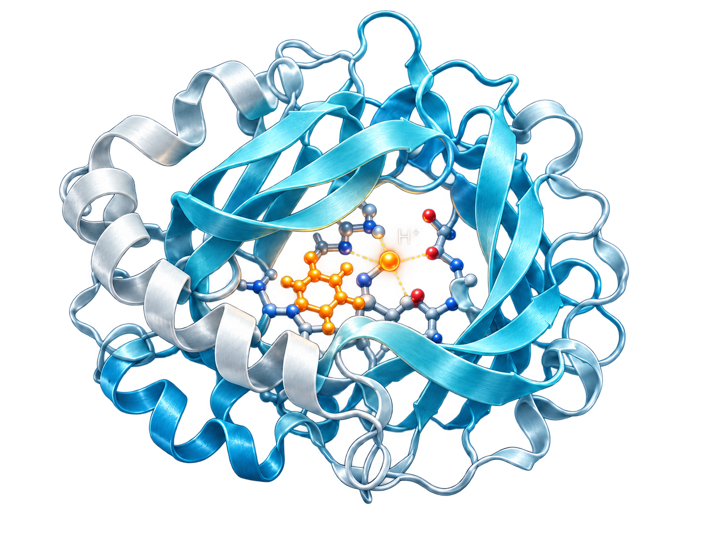

01
protonation-analysis
Processes XVG files, classifies protonation states, applies hysteresis and extracts TRR microtrajectories.
Um fluxo computacional para análise de protonação, microestados moleculares e cálculos de energia livre de ligação em sistemas biomoleculares.

The CpHMD / MM-PBSA suite provides a general-purpose workflow for protonation analysis, molecular simulation processing and binding free-energy calculations in biomolecular systems. Specific systems are presented as application examples.
Provide a traceable workflow for protonation analysis, molecular simulation processing and free-energy validation.
The system consists of three main products that connect protonation analysis, GROMACS processing and free-energy data validation.
Processes XVG files, classifies protonation states, applies hysteresis and extracts TRR microtrajectories.
Prepares GROMACS structures and trajectories and automates MM/PBSA calculations in HPC environments.
Aggregates free-energy results and checks data integrity and provenance.
This module analyzes protonation states, hysteresis, histidine microstates and molecular trajectory segments.
| State | Lambda Criterion |
|---|---|
| Protonated | λ ≤ 0.2 |
| Transition Zone | 0.2 < λ < 0.8 |
| Deprotonated | λ ≥ 0.8 |
Lambda values outside the interval [0, 1] are retained without clamping.
Transition-zone frames are not discarded during microstate analysis. The effective state inherits the last confirmed physical state.
The HSPT group is evaluated cooperatively under the physical constraint Σλ ≈ 1. HSP, HSD and HSE retain distinct identities in microstate signatures.
The workflow is not limited to membrane systems. Membrane-specific settings are optional and should be enabled only when the molecular system requires them.
This module prepares molecular structures, processes trajectories and runs binding free-energy calculations in high-performance computing environments.
The gromacs-pipeline.cfg file supports configurable worker counts and OMP/MPI parameters. The pipeline can also use membrana.json generated by Product 1 when membrane support is applicable.
Use the configuration files and version-specific instructions from the project repository before running production calculations.
This section will bring together practical walkthroughs showing how the suite can be applied to different biomolecular systems. The examples are applications of the general workflow, not restrictions on the systems it supports.
A dedicated example based on Alana's current application will be added when its workflow details and supporting materials are organized.
A step-by-step guide to input preparation, trajectory processing and result interpretation will be documented here.
This module aggregates free-energy results and verifies data integrity and provenance before a batch is accepted for reporting.
ΔGbind = ΔEMM + ΔGsolv − TΔS
ΔEMM = ΔEvdW + ΔEele + ΔEint
ΔGsolv = ΔGPB + ΔGnp
In the MM/PBSA decomposition, the molecular-mechanics contribution is commonly separated into van der Waals, electrostatic and internal energy terms; solvation includes polar (PB) and nonpolar contributions. The entropic term (−TΔS) is optional and depends on the calculation protocol. The exact terms used in this project must be confirmed from its input configuration.
gmx_MMPBSA: official documentation · Valdés-Tresanco et al. (2021).
| Contracts | Validation Scope |
|---|---|
| C1–C5 | Input files, topology and trajectory consistency. |
| C6–C8 | Microstate signature validation and reconstruction from the corrected PDB. |
| C9–C10 | PBC processing provenance and consistency of software versions and membrane modes. |
Each record should link to its original document, version, rationale and implementation evidence.
The project uses the gepess3 HPC cluster, including the gn009 and gn010 nodes with Intel Gold 6130 processors.
Research team members, academic degrees, graduate programs and institutional affiliations will be added after confirmation.
Consult the original project documents, source code, version history, RDC/RDM records and scientific references for complete technical details.
GEPEsS / Fiocruz Ceará — CpHMD / MM/PBSA Technical Documentation.